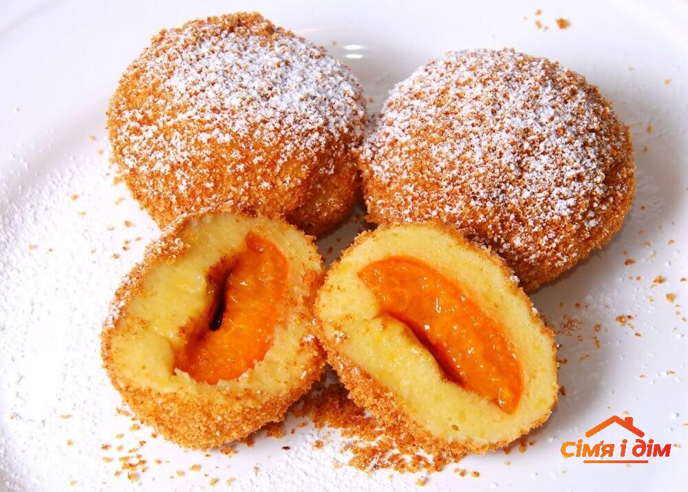

Перші страви
-
Борщ
Ця страва – символ української кухні, перша і єдина, яка уже на розгляді в ЮНЕСКО, щоб бути включеною в список Нематеріальної культурної спадщини України. Саме його, згідно опитуванням, більшість українців вважають улюбленою стравою національної кухні. До речі, так думають не тільки українці: CNN включили борщ до 20 найсмачніших супів у світі!
Хоча вважається, що найбільш поширеним борщ є в Північних та Центральних регіонах, насправді готують його скрізь.
Класичний борщ складається з близько 30 інгредієнтів! Серед них найголовніші: буряк, капуста, картопля, морква, цибуля, яловичина та томатна паста. Але в залежності від регіону рецепти можуть різнитися. Наприклад, на Поділлі додають квасолю, на Півдні – борошно, на Слобожанщині – пиво, у київський борщ – хлібний квас. Є зелений борщ, червоний, грибний, холодний. Усього понад 70 видів!
Їли борщ зазвичай не з хлібом, а з пампушками з часником.
Цікавий факт: наші предки навіть надавали борщу сакрального значення, бо думали, що з його парою відлітали до раю душі небіжчиків. Тому борщ був обов’язковою стравою на поминальних обідах.
-
Бограч
Цю страву ми запозичили в угорців, і зараз вона стала традиційною в родинах Західної України. Основними інгредієнтами для бограча слугують м’ясо різних видів (3-5), сало, картопля, морква, цибуля, капуста кольрабі, спеції і обов’язково паприка. Традиційно бограч готувався на відкритому вогні у казані і мав бути дуже наваристим, схожим на гуляш. До речі, навіть сама назва бограч означає «казан».
На відміну від борщу, бограч вважався святковою стравою або варіантом для пікніка. Бо ж його навіть придумали пастухи, що готували цю страву в горах.
Цікавий факт: прийнято, що бограч мають готувати чоловіки, і кожен господар має свій рецепт.
Другі страви
-
Вареники
Вареники або на західноукраїнський лад пироги – страва, яку Білл Клінтон заніс до свого списку Must Be Served, якій єврейський поет Саул Черніхівський присвятив одноіменну поему та музичну ідилію, про які згадував у «Енеїді» Котляревський та у «Вії» Гоголь. За однією з версій вареники, що раніше звалися «вараніки», були відомі ще в дохристиянські часи, а за іншою страва походить від турецьких «дюш-варів».
Готують вареники з прісного тіста, а начинка може бути найрізноманітнішою. Традиційними вважалася картопля, цибуля, шкварки, сир, вишні, чорниці. На Чернігівщині додають шкварки, на Закарпатті – бринзу, на Поліссі – товчену квасолю. Відомі навіть варіанти начиняти страву папороттю, редькою або борошном зі смальцем.
З варениками пов’язані багато народних звичаїв і традицій: їх ототожнювали з Місяцем і використовували як жертовну їжу; процес замішування тіста символізував зародження світу, а начинка – продовження роду; їх приносили породілі, їли під час жнив та коли народжувала корова, щоб теля було здоровим. На варениках дівчата гадали на Андрія, а на Старий Новий рік готували страву з сюрпризом, ховаючи у начинку щось неочікуване (гудзик, квасолину, перець тощо).
Цікавий факт: вареник вважається символом канадського міста Глендон, тут йому навіть встановлено пам’ятник заввишки 9 метрів. В Україні пам'ятник варенику був в Черкасах, але в 2013 році його демонтували. Того ж таки 2013 року у Буковелі зліпили найбільший у світі вареник зі снігу.
-
Куліш
Куліш був улюбленою стравою українських козаків та чумаків. Його часто готували на обід в походах (звідси і нша назва «польова каша») або вдома на вечерю. Куліш готується на основі пшона з додаванням картоплі, моркви, сала, цибулі та зелені. Але знову ж таки залежно від регіону рецепти страви різнилися: На Чернігівщині та Полтавщині готували гречаний, а на Південному Поділлі – кукурудзяний, на Правобережному Поліссі куліш могли варити на молоці, сироватці або маслянці. Справжній куліш мав бути густим, а не таким, у якому крупина за крупиною ганяється з дубиною.
Цікавий факт: вважається, що куліш корисний для профілактики онкозахворювань.
-
Банош
Банош – одна з найпопулярніших страв галицької кухні, яку на Закарпатті готують по кілька разів на тиждень. Справжній банош має бути приготований у чавунному казані на відкритому вогнищі з кукурудзяної крупи на овечій сметані або вершках, які 3 дні зберігаються в коморі. Заправляють готовий банош бринзою, білими грибами або шкварками. Помішувати кашу можна тільки дерев’яною ложкою і тільки в одну сторону.
Цікаві факти:
- Усі страви пов’язані з використанням продукції вівчарства мають готувати чоловіки. Тому приготування баноша теж вважається чоловічою справою.
- На Рахівщині банош називають «вічним двигуном» за його поживність і здатність надовго наситити цілу родину.
Закуски
-
Сало
Сало – один з найголовніших продуктів української кухні. Його вживають сирим, соленим, копченим, смаженим і навіть в шоколаді, з хлібом, часником, цибулею, зеленню.
Салу приписується безліч корисних властивостей, зокрема здатність запобігати атеросклерозу, виводити токсини, полегшувати похмілля тощо.
У 2011 році у Львові відкрили єдиний у світі музей сала. Саме тут можна скуштувати сало в шоколаді та ще 35 видів цього продукту.
Цікавий факт: найсмачнішим вважається сало свиней, яких годують жолудями.
-
Шовдар
Шовдар – це м’ясний делікатес, який готують на Закарпатті на великі свята, зокрема на Великдень. У кожного господаря свій рецепт, але для класичного шовдаря потрібно густо натерти свинячий окіст селітрою, цукром, сіллю та спеціями і на 3 тижні помістити в діжку, засипавши його сіллю. Потім сало треба очистити від солі і на 3 дні помістити в коптильню. Готовий шовдар нарізають тоненькими скибочками і їдять сирим, вареним або смаженим.
-
Холодець
Холодець – м’ясна холодна страва, яку роблять ще з часів Київської Русі. Раніше його готували переважно на зимові свята, зокрема Різдво. Щоби надати страві густоти, використовували хрящі й кістки, але з винайденням желатину це робити перестали. У більш сучасних рецептах з’явилися додаткові інгредієнти: гриби, яйця, шинка, спеції. Класичний український холодець готується з будь-якого м’яса, цибулі, моркви, часнику та спецій.
Десерти
-
Млинці
Ця страва поширена на території всієї України і відома в традиційній кухні ще з часів Київської Русі. Саме слово «млинець» означало коржик із борошна. Для приготування млинців використовувалось гречане, пшеничне, кукурудзяне борошно, пшоно, крохмаль або навіть манна крупа. Обов’язковими інгредієнтами є також молоко та яйця. Млинці можна їсти без нічого або додавати начинку. Останній варант називають налисники. Серед найпоширеніших солодких начинок використовують ягоди, творог, мак та яблука. У деяких регіонах, наприклад на Чернігівщині, млинці, начинені творогом або маком, ще додатково запікалися в печі у вершковому маслі.
Цікавий факт: наші предки асоціювали млинці з Сонцем і пов’язували з богом плодороддя – Ярилом. Млинці й досі є традиційною стравою на свято Масляної.
-
Гомбовці
Гомбовці – традиційний десерт закарпатців. Він являє собою парові пиріжки з тіста з творога, манки, яєць та цукру, обвалені в панірувальних сухарях. Гомбовці можуть бути з начинкою (фруктовою чи ягідною) або без. Подаються зазвичай з солодким сметанним соусом.
Цікавий факт: гомбовці мають майже ідентичний аналог в китайській традиційній кухні – баоцзи.
-
Київський торт
Ще один гастрономічний символ української столиці, але цього разу солодкий – київський торт. Над його рецептурою кондитери фабрики імені Карла Маркса працювали роками. Її запатентували лише в 1973 році, і досі справжніми секретами приготування володіють лише працівники фабрики Roshen, що стала наступницею Карла Маркса. Основою торта є коржі на заквашених білках з додаванням цукру, борошна та горішків. Крем готується з масла, яєць, молока та цукру з додаванням какао й коньяку.
Цікаві факти:
- Раніше кожен кондитер мав свій унікальний «кремовий почерк», але згодом розписи уніфікували, щоб уникнути підробок.
- Київський торт кілька разів здобував нагороди на престижних радянських кондитерських конкурсах.
Напої
-
Узвар
Уже багато століть узвар залишається одним з найпоширеніших традиційних напоїв на всій території України. Його готують з сушених ягід: груш, яблук, слив, вишень, чорниць, у південних регіонах додавали ще абрикоси.
Цікавий факт: узвар вважається другою за значущістю стравою на Різдво після куті.
-
Квас
Квас вважається найстарішим українським напоєм. Перші згадки про нього датуються ще 989 роком. Значного поширення, особливо в Центральній Україні, набув буряковий квас, який виник як спосіб зберігання буряків в спекотну погоду. Буряк ферментували за допомогою додавання житнього хліба (зараз це можна зробити за допомогою цукру або дріжджів) і зброджували у діжках під гнітом.
-
Спотикач
Спотикачем називають традиційну українську солодку настоянку зі спеціями міцністю 30 градусів. Вона являє собою суміш спецій (гвоздики, кориці, шафрану, ванілі, мускатного горіха), які 2 тижні настоюються на горілці.
Список цікавих українських страв і кулінарних традицій можна продовжувати дуже довго.
На щастя, зараз інтерес до відродження і популяризації автентичних страв стрімко зростає.
Відкривайте смачну Україну в подорожах та вдома, адже гастрономічна культура нації не менш важлива складова, ніж її історія чи мистецтво.